Topic 5 EDA for Feature Engineering
Recall the following workflow of the data science project.
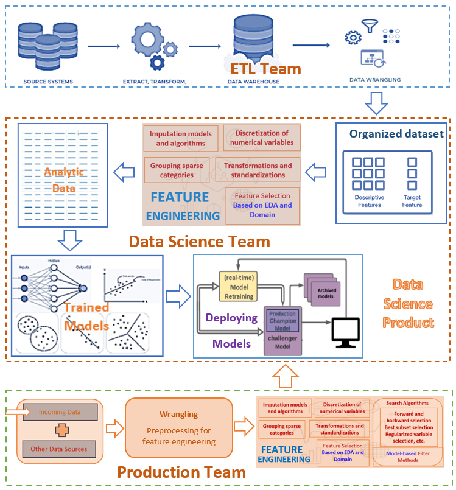
We have introduced the techniques and tools for exploratory data analysis. This note provides an example to show how to use EDA based on the data set used in the example.
5.1 Description of Data
A population of women who were at least 21 years old, of Pima Indian heritage, and living near Phoenix, Arizona, was tested for diabetes according to World Health Organization criteria. The data were collected by the US National Institute of Diabetes and Digestive and Kidney. The objective of the data set is to diagnostically predict whether or not a patient has diabetes, based on certain diagnostic measurements included in the data set. Several constraints were placed on the selection of these instances from a larger database.
There are two versions of the data available in the public domain. This case study uses the version that contains the missing values. The total number of records in this data set is 768. The data set consists of 9 variables including the response variable with the name diabetes. Predictor variables include the number of pregnancies the patient has had, their BMI, insulin level, age, and so on. A detailed description of the variables is given below
pregnant: Number of times pregnant
glucose: Plasma glucose concentration 2 hours in an oral glucose tolerance test
pressure: Diastolic blood pressure (mm Hg)
triceps: Triceps skin fold thickness (mm)
insulin: 2-Hour serum insulin (mu U/ml)
mass: Body mass index (weight in kg/(height in m)^2)
pedigree: Diabetes pedigree function
age: Age (years)
diabetes: outcome class variable (‘neg’ or ‘pos’)
A copy of this publicly available data is stored at https://pengdsci.github.io/datasets/PimaDiabetes/PimaIndiansDiabetes2.csv.
PimaDiabetes = read.csv("https://pengdsci.github.io/datasets/PimaDiabetes/PimaIndiansDiabetes2.csv")[, -1]
5.2 EDA for Feature Engineering
We have introduced several techniques and methods in an earlier note. We will use some EDA techniques and methods as needed for this data and subsequent modeling.
We first scan the entire data set and determine the EDA tools to use for feature engineering.
## pregnant glucose pressure triceps insulin mass pedigree
## Min. : 0.000 Min. : 44.0 Min. : 24.00 Min. : 7.00 Min. : 14.00 Min. :18.20 Min. :0.0780
## 1st Qu.: 1.000 1st Qu.: 99.0 1st Qu.: 64.00 1st Qu.:22.00 1st Qu.: 76.25 1st Qu.:27.50 1st Qu.:0.2437
## Median : 3.000 Median :117.0 Median : 72.00 Median :29.00 Median :125.00 Median :32.30 Median :0.3725
## Mean : 3.845 Mean :121.7 Mean : 72.41 Mean :29.15 Mean :155.55 Mean :32.46 Mean :0.4719
## 3rd Qu.: 6.000 3rd Qu.:141.0 3rd Qu.: 80.00 3rd Qu.:36.00 3rd Qu.:190.00 3rd Qu.:36.60 3rd Qu.:0.6262
## Max. :17.000 Max. :199.0 Max. :122.00 Max. :99.00 Max. :846.00 Max. :67.10 Max. :2.4200
## NA's :5 NA's :35 NA's :227 NA's :374 NA's :11
## age diabetes
## Min. :21.00 Length:768
## 1st Qu.:24.00 Class :character
## Median :29.00 Mode :character
## Mean :33.24
## 3rd Qu.:41.00
## Max. :81.00
## 5.2.1 Missing Values - Imputation
The above summary table indicates that feature variables glucose, pressure, triceps, insulin, and mass have missing values. insulin has nearly 50% missing values. triceps has 227 missing values. The other three variables have a very low percentage of missing values.
5.2.1.1 Missing Value vs No Value
Missing value means that the information is available but not collected while no value means that the value does not exist.
Replacing the missing values with proxy values (imputation) or deleting them from the data are the ways of handling missing values. Most software programs automatically delete all records with missing components from the data before modeling if the missing value issue is not handled.
no-value should be never imputed in the data processing. The ways of handling no value is to either drop all records with no value components or the feature variables that have no values. The former will change the study population and the latter will lead to a loss of information.
5.2.1.2 Glucose Tolerance (glucose) vs 2-Hour Serum Insulin (insulin)
Both fasting insulin test and glucose tolerance test are used in diabetes diagnosis, therefore, variables glucose and insulin are correlated. Since nearly 50% of patients did not do the insulin test. Therefore, we can use glucose to impute the missing values in insulin. We first look at the correlation between the two variables based on the complete data.
par(mfrow = c(1,2))
plot(PimaDiabetes$glucose, PimaDiabetes$insulin, xlab = "Glucose Level", ylab = "Insulin Level")
plot(PimaDiabetes$glucose, log(PimaDiabetes$insulin), xlab = "Glucose Level", ylab = "log Insulin Level")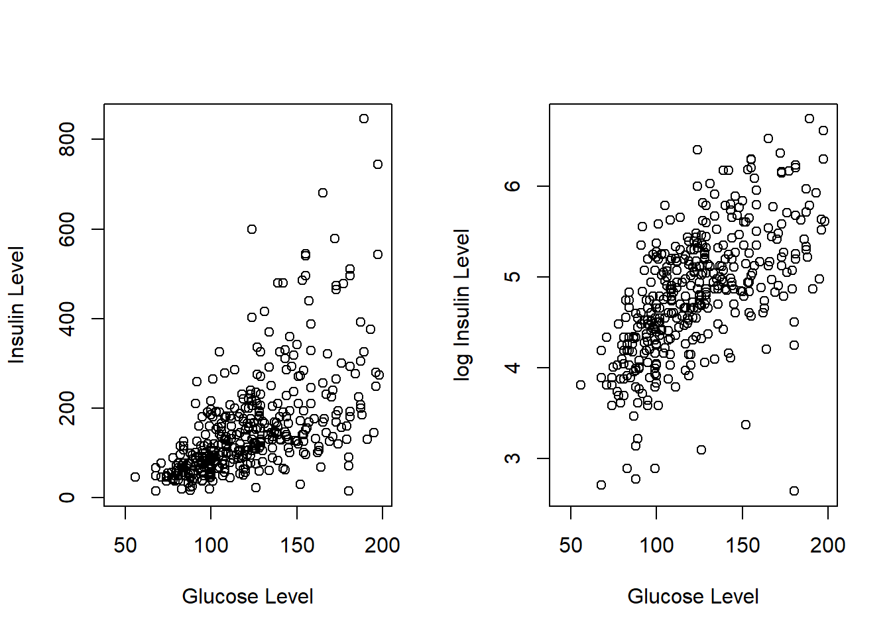
The scatter plot shows that the logarithm of the insulin level and the glucose level are highly linearly correlated. We can use this relationship to impute the logarithm of insulin level based on the no-missing glucose level. Since we will use this data set to build predictive models, the logarithm of insulin will be used directly in the subsequent models and algorithms.
impute.insulin.lm = lm(log(insulin[-446]) ~ glucose[-446], data = PimaDiabetes)
summary(impute.insulin.lm)##
## Call:
## lm(formula = log(insulin[-446]) ~ glucose[-446], data = PimaDiabetes)
##
## Residuals:
## Min 1Q Median 3Q Max
## -1.87469 -0.31478 -0.02521 0.33826 1.55711
##
## Coefficients:
## Estimate Std. Error t value Pr(>|t|)
## (Intercept) 3.0588150 0.1095012 27.93 <2e-16 ***
## glucose[-446] 0.0143630 0.0008673 16.56 <2e-16 ***
## ---
## Signif. codes: 0 '***' 0.001 '**' 0.01 '*' 0.05 '.' 0.1 ' ' 1
##
## Residual standard error: 0.5269 on 390 degrees of freedom
## (因为不存在，375个观察量被删除了)
## Multiple R-squared: 0.4129, Adjusted R-squared: 0.4114
## F-statistic: 274.3 on 1 and 390 DF, p-value: < 2.2e-16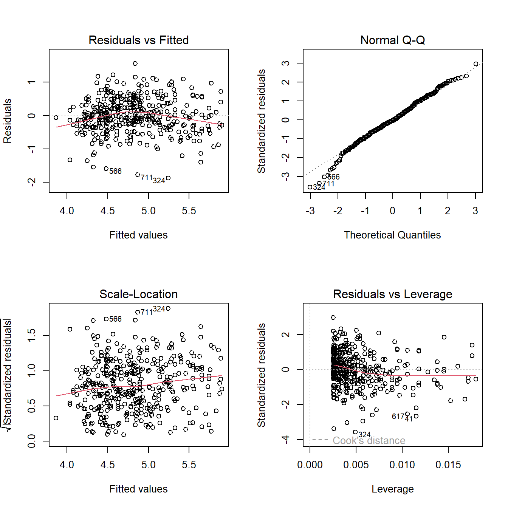
Next, we use the following linear regression to impute the missing values in insulin.
glucose = PimaDiabetes$glucose
impute.log.insulin = log(PimaDiabetes$insulin)
n=length(impute.log.insulin)
for (i in 1:n){
if (is.na(impute.log.insulin[i]) == TRUE && is.na(glucose[i]) == FALSE) impute.log.insulin[i] = sum(coef(impute.insulin.lm)*c(1,glucose[i])) + sample(resid(impute.insulin.lm),1)
}Visual comparison of the distribution between the original insulin and the imputed insulin.
den.orig.insulin = density(na.omit(log(PimaDiabetes$insulin)))
den.impute.insulin = density(na.omit(impute.log.insulin))
plot(den.impute.insulin, xlab="log insulin", main = "density curve of log of original and imputed insulin",
col = "red")
lines(den.orig.insulin, col = "blue")
legend("topright", c("original log insulin", "inputed log insulin"), col = c("blue", "red"), lty = rep(1,2), cex = 0.9, bty = "n")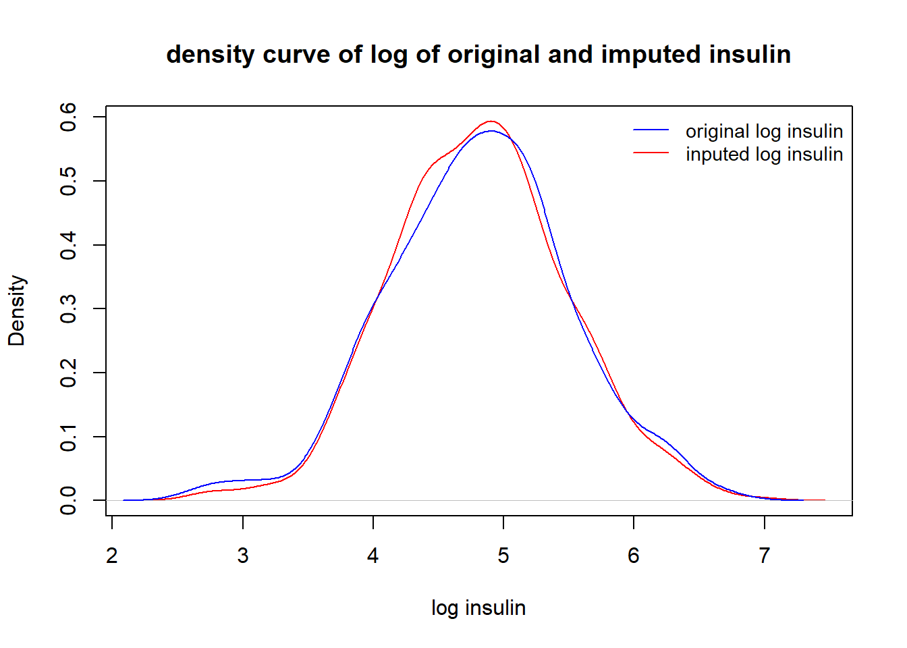
The above density curves show that distributions of the imputed log insulin and original log insulin levels are close to each other.
5.2.1.3 Triceps Skinfold Thickness (triceps) vs Body Mass Index (mass)
Clinical variables triceps (triceps skin-fold thickness, see the following figure to see how it is measured) and mass (body mass index) are clinically correlated.
Figure 5.1: Figure 1. Measurement of triceps skinfold using a Lange caliper. With the subject’s arm in a relaxed position, the skinfold is picked with thumb and index fingers at the midpoint of the arm.
triceps has nearly 30% missing values and mass has a few missing values. We can use the information in mass to impute the missing values in triceps - single imputation with a linear regression model. To perform imputation,
fit a linear regression model with
tricepsbeing the response andmassas the predictor.use the above fitted regression to predict
tricepson non-missingmass.impute the missing value in
tricepswith the predictedtriceps.
Note that in R, records with missing components will be automatically deleted in the modeling process.
##
## Call:
## lm(formula = triceps[-580] ~ mass[-580], data = PimaDiabetes)
##
## Residuals:
## Min 1Q Median 3Q Max
## -19.6294 -4.9225 -0.4862 5.0930 21.3029
##
## Coefficients:
## Estimate Std. Error t value Pr(>|t|)
## (Intercept) -3.34070 1.56901 -2.129 0.0337 *
## mass[-580] 0.98464 0.04669 21.087 <2e-16 ***
## ---
## Signif. codes: 0 '***' 0.001 '**' 0.01 '*' 0.05 '.' 0.1 ' ' 1
##
## Residual standard error: 7.442 on 536 degrees of freedom
## (因为不存在，229个观察量被删除了)
## Multiple R-squared: 0.4534, Adjusted R-squared: 0.4524
## F-statistic: 444.7 on 1 and 536 DF, p-value: < 2.2e-16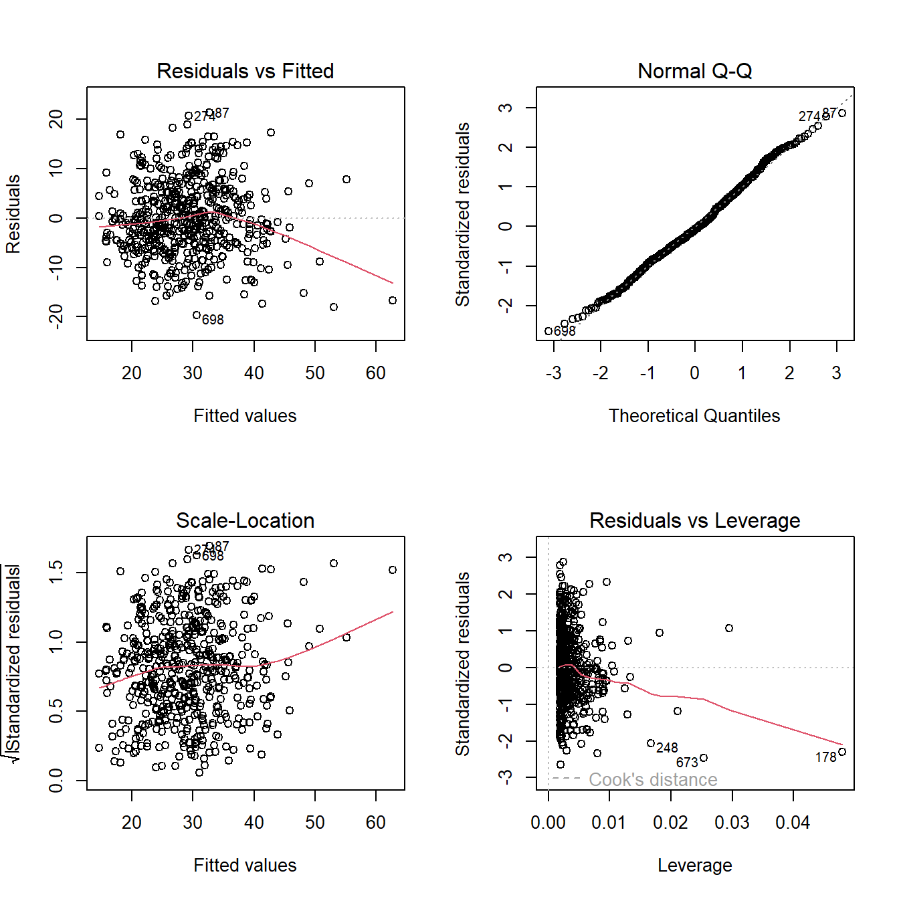
The above fitted regression line will be used to impute the missing values in triceps in the following.
mass = PimaDiabetes$mass
impute.triceps = PimaDiabetes$triceps
n=length(impute.triceps)
for (i in 1:n){
if (is.na(impute.triceps[i]) == TRUE && is.na(mass[i]) == FALSE) impute.triceps[i] = sum(coef(impute.lm)*c(1,mass[i])) + sample(resid(impute.lm),1)
}Next, we check whether the missing values in triceps were appropriately imputed.
We look at the density curves of impute.triceps and the original triceps to see the performance of the imputation and whether a discretization is needed.
den.tri = density(na.omit(PimaDiabetes$triceps))
den.imput.tri = density(na.omit(PimaDiabetes$impute.triceps))
plot(den.imput.tri, col = "red", xlab = "triceps", ylab = "density", main = "original triceps vs imputed triceps")
lines(den.tri, col = "blue")
legend("topright", c("Inputed Triceps", "Original Triceps"), col=c("red", "blue"), lty =rep(1,2), bty="n", cex = 0.8)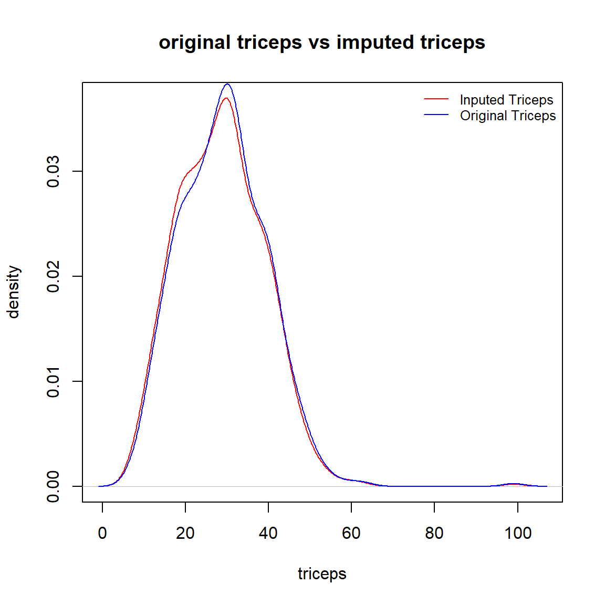
The above density curves indicate that
the two distributions are almost identical, and
both distributions are almost symmetric (except for one outlier in the original data).
Since the missing values in triceps were appropriately imputed, we next add the impute.triceps to the original data frame and drop the original triceps.
To close this imputation section, we re-organize the data set by dropping the original variables and keeping the imputed variables. At the same time, we also delete all records with missing components.
PimaDiabetes = na.omit(PimaDiabetes[, c("pregnant", "glucose", "pressure", "mass" , "pedigree" , "age" ,"impute.log.insulin", "impute.triceps", "diabetes")])
5.2.2 Assess Distributions
This subsection focuses on the potential discretization of continuous variables and grouping sparse categories of category variables based on their distribution.
5.2.2.1 Discretizing Continuous Variables
The above pairwise scatter plot shows that glucose, pressure(diastolic reading), and age are usually discretized in the clinical study. We will use the clinical standard and practices to discretize these variables
According to Medical News Today (https://www.medicalnewstoday.com/articles/a1c-chart-diabetes-numbers#a-1-c-chart). The glucose levels \(< 117\), \([117, 137]\), \(>137\) indicate normal, pre-diabetes, and diabetes.
According to National Diabetes Statistics Report ( https://www.cdc.gov/media/releases/2017/p0718-diabetes-report.html#:~:text=Rates%20of%20diagnosed%20diabetes%20increased,older%2C%2025%20percent%20had%20diabetes), rates of diagnosed diabetes increased with age. Among adults ages 18-44, 4 percent had diabetes. Among those ages 45-64 years, 17 percent had diabetes. And among those ages 65 years and older, 25 percent had diabetes.
According to The Seventh Report of the Joint National Committee on Prevention, Detection, Evaluation, and Treatment of High Blood Pressure (2003 Guideline, https://www.nhlbi.nih.gov/files/docs/guidelines/express.pdf), The normal diastolic pressure is less than 80 mm Hg, at risk diastolic reading is between 80 mm Hg and 90 mm Hg, abnormal (hypertension) diastolic reading is higher than 90 mm Hg.
We will discretize these three variables for future models and algorithms.
PimaDiabetes$grp.glucose <- ifelse(PimaDiabetes$glucose < 117, '(0, 117)',
ifelse(PimaDiabetes$glucose > 137, '> 137', '[117,137]'))
PimaDiabetes$grp.diastolic <- ifelse(PimaDiabetes$pressure < 80, '(0, 80)',
ifelse(PimaDiabetes$pressure > 90, '> 90', '[80,90]'))
PimaDiabetes$grp.age <- ifelse(PimaDiabetes$age <= 44, '[21, 44]',
ifelse(PimaDiabetes$age >= 65, '65+', '[45, 64]'))
5.2.2.2 Grouping Sparse Categories
The number of times pregnant pregnant is a discrete numerical variable. We could also consider it as an ordinal categorical variable.
pregnancy = table(PimaDiabetes$pregnant)
barplot(pregnancy, main = "Distribution of pregnacies", xlab = "Pregnant Times")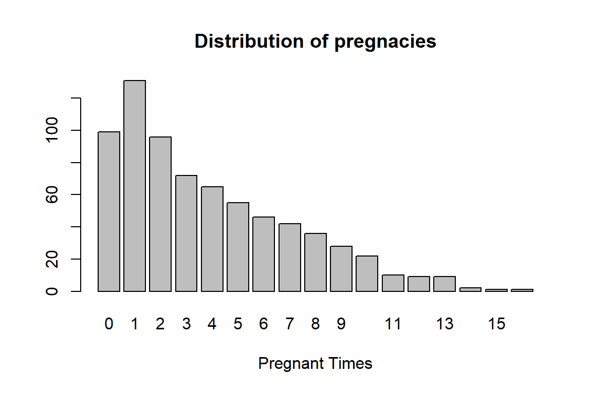
There are a few sparse categories in the variable, we decide to group this variable in the following: 0, 1, 2, 3-4, 5-7, 8+.
PimaDiabetes$grp.pregnant <- ifelse(PimaDiabetes$pregnant == 0, '0',
ifelse(PimaDiabetes$pregnant == 1, '1',
ifelse(PimaDiabetes$pregnant == 2, '2',
ifelse((PimaDiabetes$pregnant == 3 | PimaDiabetes$pregnant == 4), '3-4',
ifelse((PimaDiabetes$pregnant == 5 | PimaDiabetes$pregnant == 6 | PimaDiabetes$pregnant == 7), '5-7',
ifelse(PimaDiabetes$pregnant >= 8, '8+', "NA"))))))As the last step, we only keep those variables to used in the subsequent modeling.
5.2.2.3 Save Analytic Dataset
The final analytic data should be saved as a permanent data for the subsequent analysis and modeling and upload the saved data set to HitHub data repository for an easy access in the future.
write.csv(PimaDiabetes, "C:\\Users\\75CPENG\\OneDrive - West Chester University of PA\\Desktop\\cpeng\\WCU-Teaching\\2023Summer\\STA551\\w03\\AnalyticPimaDiabetes.csv")The above csv file is also uploaded to the GitHub data repository at https://pengdsci.github.io/STA551/w03/AnalyticPimaDiabetes.csv.
5.2.3 Pairwise Association
Depending on the types of variables, there are three different combinations of two variables: two numeric variables, two categorical variables, one numeric variable, and one categorical variable. We will assess the association between two variables graphically based on the above three scenarios.
5.2.3.1 Two Numeric Variables
The best visual tool for assessing pairwise linear association between two numeric variables is a pair-wise scatter plot. The pair-wise scatter plot and its variants are available in several different R packages.
ggpairs(PimaDiabetes, # Data frame
columns = 1:4, # Columns
aes(color = diabetes, # Color by group (cat. variable)
alpha = 0.5)) # Transparency## plot: [1,1] [====>----------------------------------------------------------------------------------] 6% est: 0s
## plot: [1,2] [==========>----------------------------------------------------------------------------] 12% est: 0s
## plot: [1,3] [===============>-----------------------------------------------------------------------] 19% est: 1s
## plot: [1,4] [=====================>-----------------------------------------------------------------] 25% est: 1s
## plot: [2,1] [==========================>------------------------------------------------------------] 31% est: 1s
## plot: [2,2] [================================>------------------------------------------------------] 38% est: 0s
## plot: [2,3] [=====================================>-------------------------------------------------] 44% est: 0s
## plot: [2,4] [===========================================>-------------------------------------------] 50% est: 0s
## plot: [3,1] [================================================>--------------------------------------] 56% est: 0s
## plot: [3,2] [=====================================================>---------------------------------] 62% est: 0s
## plot: [3,3] [===========================================================>---------------------------] 69% est: 0s
## plot: [3,4] [================================================================>----------------------] 75% est: 0s
## plot: [4,1] [======================================================================>----------------] 81% est: 0s
## plot: [4,2] [===========================================================================>-----------] 88% est: 0s
## plot: [4,3] [=================================================================================>-----] 94% est: 0s
## plot: [4,4] [=======================================================================================]100% est: 0s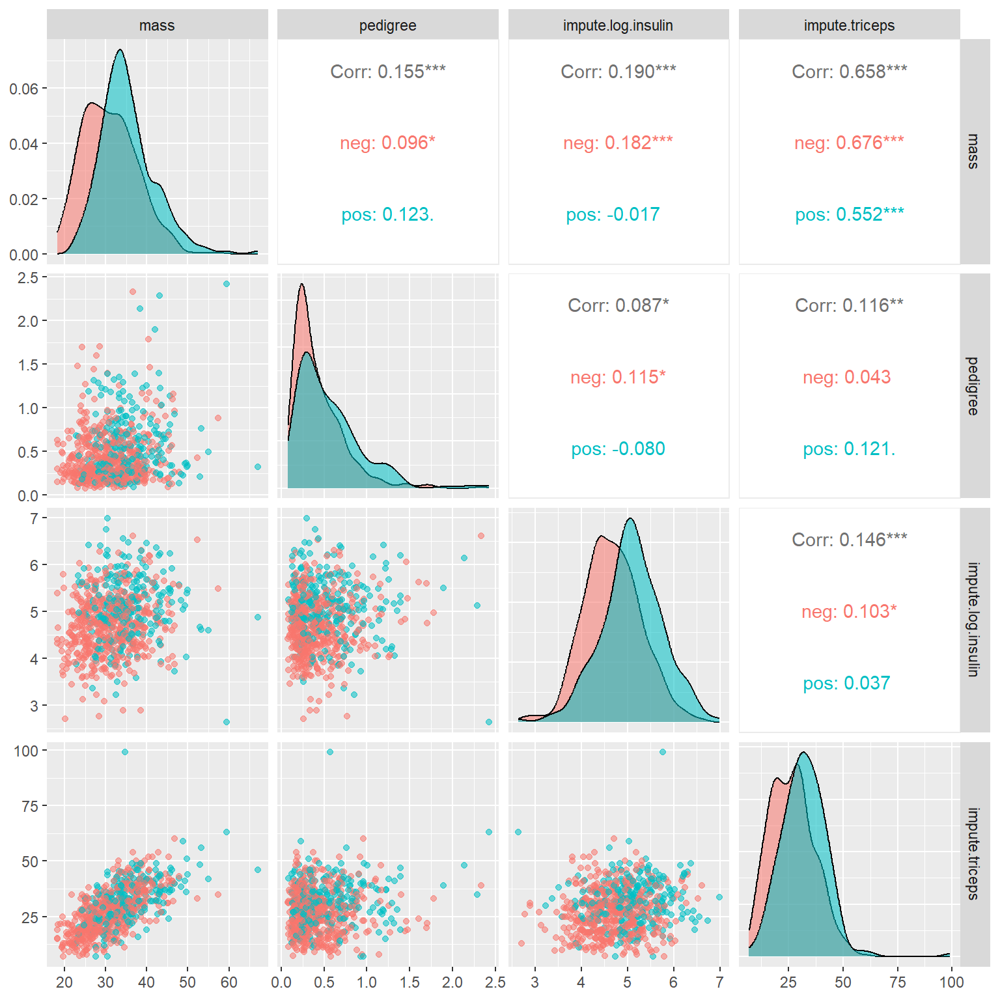
The off-diagonal plots and numbers indicate the correlation between the pair-wise numeric variables. As expected, triceps and mass are significantly correlated. Other paired variables have weak correlations.
The main diagonal stacked density curves show the potential difference in the distribution of the underlying numeric variable in diabetes and diabetes-free groups. This means that the stacked density curves show the relation between numeric and categorical variables. These stacked density curves are not completely overlapped indicating somewhat correlation between each of these numeric variables and the binary response variable.
Because of the above interpretation between numeric variables and the binary response variable, we will not open a new subsection to illustrate the relationship between a numeric variable and a categorical variable.
5.2.3.2 Two Categorical Variables
Mosaic plots are convenient to show whether two categorical variables are dependent. In EDA, we are primarily interested in whether the response (binary in this case) is independent of categorical variables. Those categorical variables that are independent of the response variable should be excluded in any of the subsequent models and algorithms.
par(mfrow = c(2,2))
mosaicplot(grp.glucose ~ diabetes, data=PimaDiabetes,col=c("Blue","Red"), main="glucose vs diabetes")
mosaicplot(grp.diastolic ~ diabetes, data=PimaDiabetes,col=c("Blue","Red"), main="diastolic vs diabetes")
mosaicplot(grp.age ~ diabetes, data=PimaDiabetes,col=c("Blue","Red"), main="age vs diabetes")
mosaicplot(grp.pregnant ~ diabetes, data=PimaDiabetes,col=c("Blue","Red"), main="pregnant vs diabetes")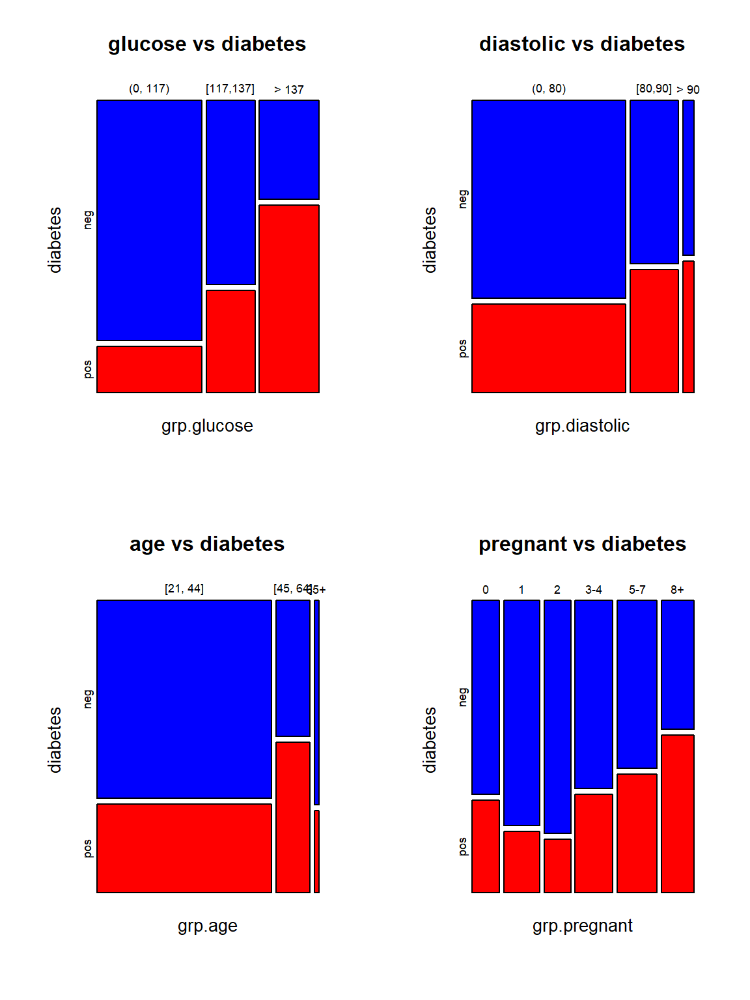
The top two mosaic plots demonstrate the positive association between glucose levels and diastolic readings. The bottom two mosaic plots also show that diabetes is not independent of age and pregnant times because the proportion of diabetes cases in individual categories is not identical.
5.3 Concluding Remarks
We begin with records that may have missing values and end up with an engineered record to be fed into models and algorithms!
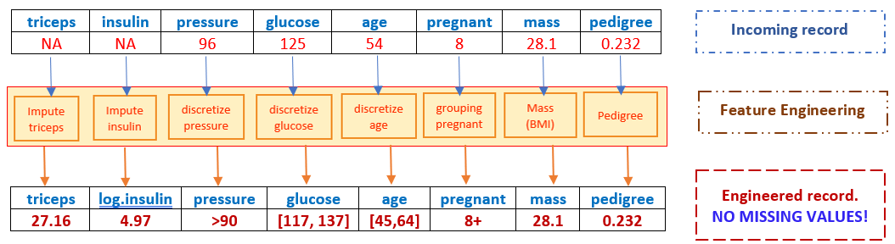
However, if the incoming record has a missing value in mass, the resulting engineered record cannot be fed to the candidate models and algorithms since it has a missing value (most programs will automatically delete this record), hence, there will be no predicted value for the response!
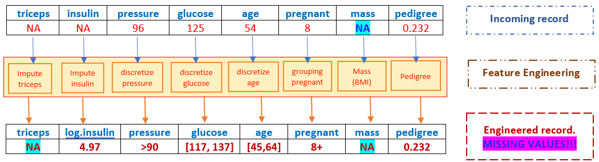
Therefore, we need a replacement imputation before any model-based imputation. This is practically important since it will prevent the potential failure of the dynamic prediction system!